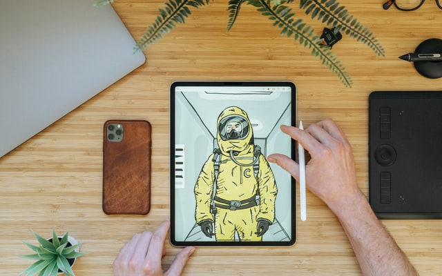
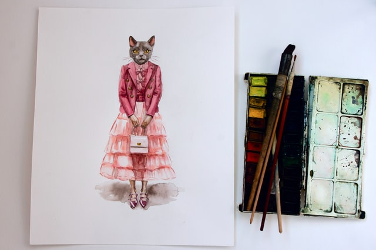

Project Teaser

Professional Character
We will learn how to draw a professional character combine with colorful texture using digital art
Objects
Drawing objects may look easier, but how to make it looks like real?

Colorful Painting
Not only digital art tutorial, but we also provide watercolor based tutorial
Professional Character
Sometimes it becomes bopred to apply so many colors. So, let's have a different looks sometimes with black and white.